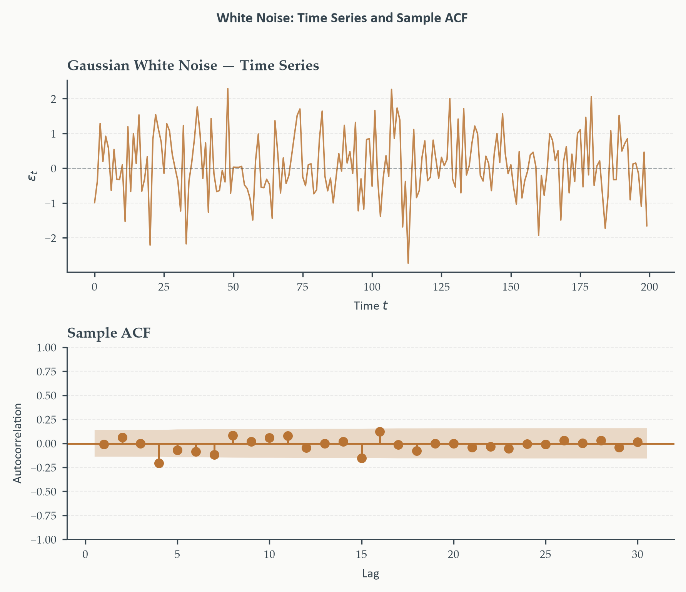
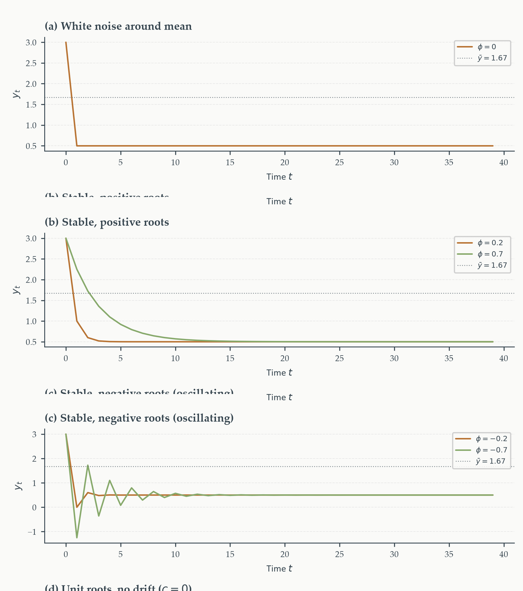
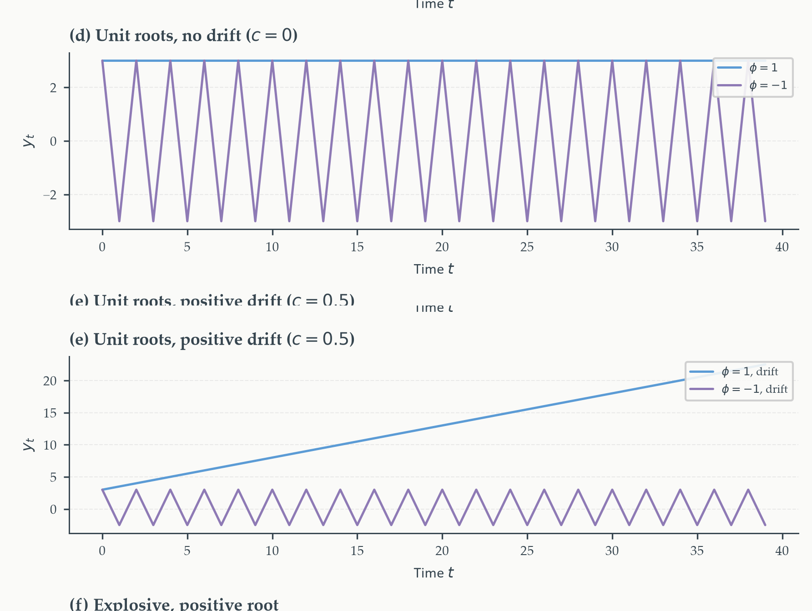
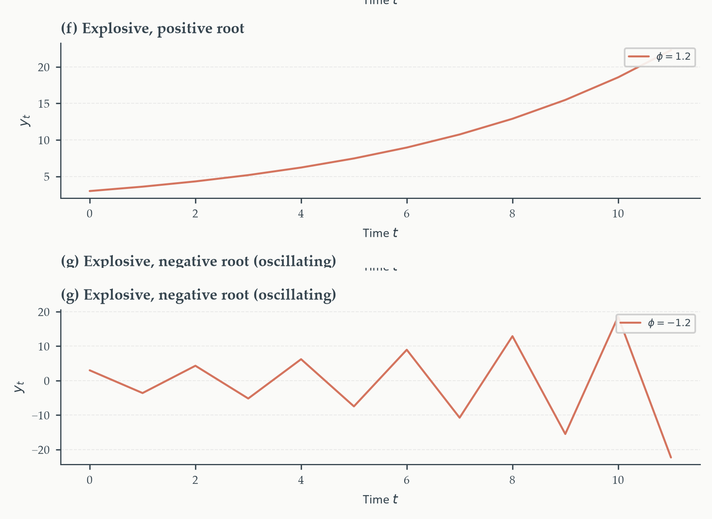
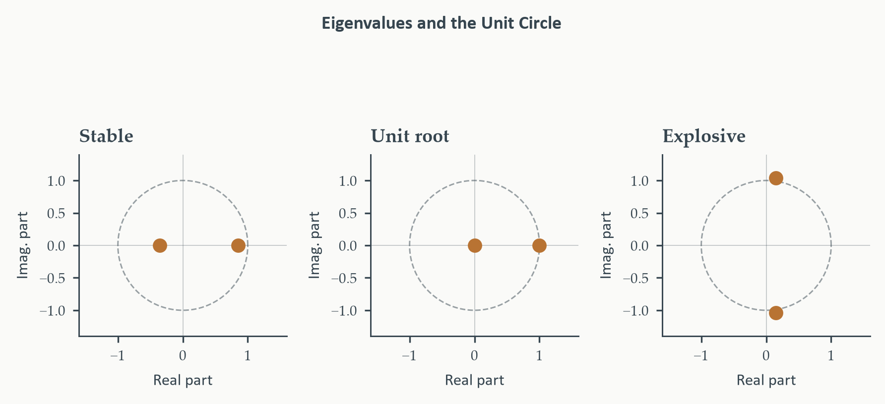
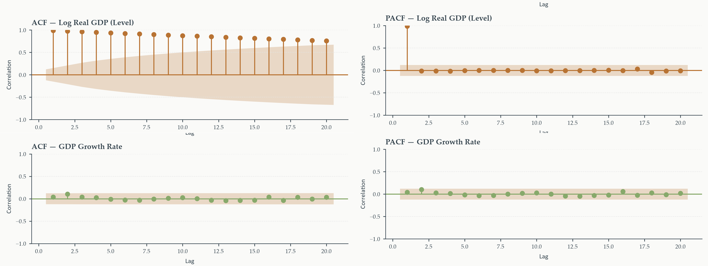
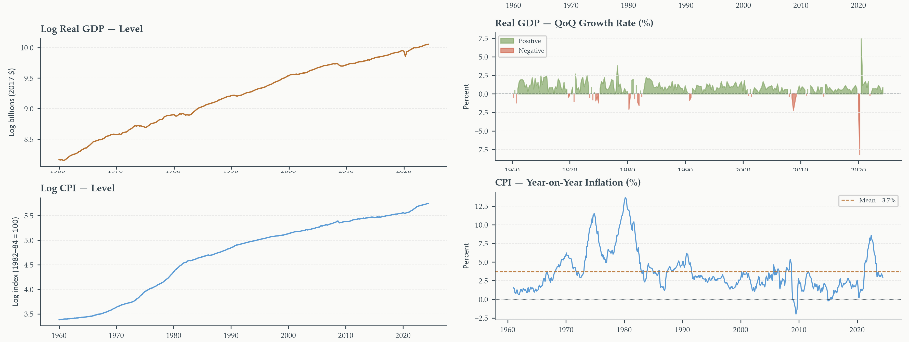

Foundations of Time Series Analysis
Chapter 1
2026-08-05
Data With a Memory
What actually makes time series data different from any other kind of data?
- Not the subject matter — not that it’s economics, or finance
- The answer: each observation is connected to the ones before it
- In cross-sectional work, independence is the ideal. Here, dependence is the object of study
- That single shift changes every tool we use: estimators, standard errors, tests — even the questions we ask
Why This Chapter Matters
Four building blocks the rest of the course rests on:
- What forecasting actually is — and is not
- The algebra of difference equations — and how it connects to eigenvalues
- Stationarity — the condition that makes estimation possible at all
- The tools to detect it: ACF/PACF, and formal tests
Everything in Chapters 2–11 is a variation on these four ideas. Get this chapter right, and the rest of the course is mostly extension, not new territory.
Today’s Roadmap
- What is a time series? What is forecasting?
- Notation, operators, and white noise
- Difference equations — the mathematical core
- The ACF and PACF
- Stationarity
- Testing and fixing nonstationarity
What Is a Time Series? What Is Forecasting?
Section 1
Five Series, Five Behaviors
Before any formalism — what do real economic time series actually look like?
- Real GDP — trends upward, no stable mean; we work with the growth rate
- CPI — same story in levels; inflation’s stationarity is itself a live empirical question
- Equity returns — near-zero mean, but volatility clusters
- Exchange rates — close to a random walk; today predicts tomorrow best
- Yield curve spread — one of the strongest recession-leading indicators we have
Trends, cycles, volatility clustering, unit roots — what distinguishes these series is exactly what this course teaches you to characterize and model.
What Forecasting Is
Using what we know today to say something credible about tomorrow.
Sounds simple. It is easy to confuse with two things it is not:
Forecasting — forming the conditional expectation \(\mathbb{E}[y_{T+h} \mid \mathcal{F}_T]\): an exercise in conditional prediction.
- Not cross-sectional prediction — no temporal ordering, no information set that closes at a point in time
- Not causal inference — a forecast can work perfectly well built on pure correlation
Common mistake. Lagged \(X\) helping forecast \(Y\) is tempting to read as “\(X\) causes \(Y\).” It doesn’t. It only means \(X\) carries information about \(Y\)’s future path — that’s all Granger causality (later in the course) formalizes.
Three Types of Forecasts
Point forecast — a single number, our best guess of \(y_{T+h}\):
\[ \hat{y}_{T+h|T} = \mathbb{E}[y_{T+h} \mid \mathcal{F}_T] \]
Interval forecast — a range \([L_{T+h}, U_{T+h}]\) containing the true value with some stated probability (80%, 95%):
\[ \hat{y}_{T+h|T} \;\pm\; z_{\alpha/2}\cdot \hat{\sigma}_{T+h|T} \]
Density forecast — the full probability distribution \(\hat{p}(y_{T+h}\mid \mathcal{F}_T)\): every detail of our uncertainty, skewness and tail risk included
Point forecasts are the most common in practice — and the most incomplete. They say nothing about how confident we should be.
What Makes Economic Forecasting Hard
Genuinely harder than weather forecasting. Why?
- Structural change — economic relationships aren’t physical laws; they shift as institutions, technology, and policy change
- Measurement error and revisions — today’s GDP release is not the number we’ll have in two years
- The Lucas critique — agents react to policy; reduced-form relationships shift when the policy regime shifts
- Deep parameters — the only truly stable objects are primitives (preferences, technology) — not the estimated coefficients that depend on them
None of this makes forecasting worthless. The question is never “is this forecast perfect?” — no forecast is. It’s “is it better than the available alternative, and by how much?”
The Loss Function
Why does the conditional mean solve the forecasting problem — and does that answer depend on how we define “solve”?
The loss function \(\mathcal{L}(e_{T+h})\), where \(e_{T+h} = y_{T+h} - \hat{y}_{T+h|T}\), encodes our preference over different kinds of mistakes.
- Squared error loss: \(\mathcal{L}(e) = e^2\) — symmetric, penalizes large errors disproportionately
- Absolute error loss: \(\mathcal{L}(e) = |e|\) — symmetric, penalty linear in error size
- Asymmetric loss — over- and under-forecasting cost differently (a central bank facing surprise inflation vs. surprise deflation)
Different preferences imply different optimal forecasts — this is not a technicality.
Why Squared Loss Gives the Mean
We want \(m\) minimizing \(\mathbb{E}[(y-m)^2]\).
\[ \begin{aligned} \frac{d}{dm}\,\mathbb{E}[(y-m)^2] &= \frac{d}{dm}\,\mathbb{E}[y^2 - 2my + m^2] \\ &= -2\,\mathbb{E}[y] + 2m \end{aligned} \]
Setting this to zero:
\[ -2\,\mathbb{E}[y] + 2m = 0 \;\implies\; m = \mathbb{E}[y] \tag{1} \]
The conditional mean minimizes expected squared error. This is why \(\hat{y}_{T+h|T} = \mathbb{E}[y_{T+h}\mid\mathcal{F}_T]\) is the optimal forecast specifically under squared error loss — not universally.
Why Absolute Loss Gives the Median
We want \(m\) minimizing \(\mathbb{E}[|y-m|] = \displaystyle\int_{-\infty}^{m}(m-y)f(y)\,dy + \int_{m}^{\infty}(y-m)f(y)\,dy\).
Differentiating under the integral sign:
\[ \begin{aligned} \frac{d}{dm}\,\mathbb{E}[|y-m|] &= F(m) - \big[1 - F(m)\big] \\ &= 2F(m) - 1 \end{aligned} \]
Setting this to zero:
\[ 2F(m) - 1 = 0 \;\implies\; F(m) = \tfrac{1}{2} \tag{2} \]
\(F(m) = 1/2\) is, by definition, the median. The conditional median minimizes expected absolute error.
Why This Difference Matters
Squared loss penalizes large errors quadratically — the optimum gets pulled toward the mean to avoid catastrophic misses. Absolute loss penalizes every error proportionally — the optimum (the median) is robust to how far outliers sit from the center.
Specifying the loss function is not a technical afterthought. It’s a modeling choice tied to the actual decision problem. We return to this — Diebold-Mariano, forecast combination — in the forecast evaluation chapter.
Notation, Operators, and White Noise
Section 2
The Time Index
Every time series analysis begins with a convention for labeling observations in time.
- Time index \(t\) runs over \(\mathcal{T} = \{1, \ldots, T\}\) (sample) or \(\mathcal{T} = \mathbb{Z}\) (theoretical process)
- Arithmetic on \(t\) is meaningful: \(y_t - y_{t-1}\) is the change; \(y_{t-12}\) is a year ago (monthly data); \(y_{T+h}\) is \(h\) periods beyond the sample
- \(\mathcal{F}_t\) — the information set: everything observable at time \(t\)
Notation used throughout the course:
\[ \mu = \mathbb{E}[y_t], \quad \gamma(h) = \text{Cov}(y_t, y_{t-h}), \quad \rho(h) = \text{Corr}(y_t, y_{t-h}), \quad \sigma^2 = \text{Var}(y_t) \]
The Lag and Difference Operators
Lag operator \(L\): \(\quad Ly_t = y_{t-1}\), and \(L^k y_t = y_{t-k}\)
Difference operator \(\Delta\): \(\quad \Delta y_t = y_t - y_{t-1} = (1-L)y_t\)
These are not shorthand for convenience — they let us write an entire model class as a single polynomial equation. The AR(\(p\)) model, for instance, compresses to \(\Phi(L)y_t = c + \varepsilon_t\). We will lean on this constantly starting in Chapter 3.
White Noise
What is the simplest possible time series — the baseline against which every model is judged?
White noise \(WN(0,\sigma^2)\): a process with (1) zero mean, (2) constant variance \(\sigma^2\), (3) zero autocovariance at every nonzero lag.
Purely a statement about the first two moments — no pattern, no memory, no structure.
Why it matters practically. Model residuals \(\hat\varepsilon_t = y_t - \hat y_{t|t-1}\) should look like white noise. If they don’t — if the ACF shows structure — predictable information remains on the table, and a better model exists. We check this in every remaining chapter.
White Noise: What It Looks Like

Top: a simulated Gaussian white noise series — no trend, no visible pattern. Bottom: its sample ACF. Every bar sits inside the \(\pm1.96/\sqrt{T}\) confidence band — exactly what “zero autocorrelation at every nonzero lag” looks like in practice.
IID Noise vs. Weak White Noise
White noise requires only zero correlation — not independence.
IID noise: \(\varepsilon_t \overset{\text{iid}}{\sim}(0,\sigma^2)\) — fully independent, not just uncorrelated.
\[ \text{IID noise} \;\implies\; \text{Strong white noise} \;\implies\; \text{Weak white noise} \]
\(\varepsilon_t\) and \(\varepsilon_{t-1}\) can be uncorrelated but not independent — knowing \(\varepsilon_{t-1}\) says nothing about the mean of \(\varepsilon_t\), but may say something about its variance. This is exactly the ARCH situation: residuals pass every white-noise test while still hiding forecastable structure in volatility. We spend all of Chapter 9 on this gap.
We work with weak white noise throughout this course, flagging the few places the stronger assumption is needed.
Difference Equations — The Mathematical Core
Section 3
A Time Series Model Is a Difference Equation
What is an AR(1) model, mechanically — before we ever call it a “model”?
A first-order deterministic rule relating today’s value to yesterday’s:
\[ y_t = \phi\,y_{t-1} + c, \qquad t=1,2,3,\ldots \]
Add white noise \(\varepsilon_t \sim WN(0,\sigma^2)\):
\[ y_t = \phi\,y_{t-1} + c + \varepsilon_t \]
This is the AR(1) model. Everything we call “time series econometrics” starts as ordinary difference-equation mathematics with a random shock bolted on. We develop the deterministic theory first — the statistical properties follow directly.
First-Order: Homogeneous and Particular Solutions
We want \(y_t\) as an explicit function of \(t\) and \(y_0\). Split the solution:
\[ y_t = \underbrace{y_t^{(h)}}_{\text{homogeneous}} + \underbrace{y_t^{(p)}}_{\text{particular}} \]
Homogeneous (\(c=0\)): try \(y_t^{(h)} = A\lambda^t\).
\[ A\lambda^t = \phi A\lambda^{t-1} \;\implies\; \lambda=\phi \]
\(\lambda=\phi\) is the characteristic root — the lone root of \(\lambda - \phi = 0\).
Particular (constant forcing): try \(y_t^{(p)}=k\).
\[ k = \phi k + c \;\implies\; k = \frac{c}{1-\phi}, \quad \phi\neq 1 \]
First-Order: The General Solution
Applying the initial condition \(y_0\):
\[ y_t = \left(y_0 - \frac{c}{1-\phi}\right)\phi^t + \frac{c}{1-\phi} \tag{1} \]
A weighted sum of the initial deviation from the long-run level \(\bar y = c/(1-\phi)\) — decaying at rate \(\phi^t\) — and the long-run level itself.
Stability of a first-order difference equation.
- \(|\phi|<1\) — stable: \(y_t \to \bar y\)
- \(|\phi|=1\) — unit root: shocks have permanent effects, nonstationary
- \(|\phi|>1\) — explosive: deviations grow without bound
\(\bar y\) exists only in the stable case.
Dynamic Regimes: Stable Paths
All stable paths share the long-run equilibrium \(\bar y = 1.67\); all start from \(y_0=3\).

(a) White noise around the mean. (b) Positive roots converge monotonically — the path moves smoothly toward \(\bar y\) without overshooting. (c) Negative roots produce oscillating convergence — the path alternates above and below \(\bar y\) while converging.
Dynamic Regimes: Unit Roots
\(\phi = \pm 1\) — the boundary case, where the long-run equilibrium \(\bar y\) stops existing.

(d) No drift (\(c=0\)): the path wanders aimlessly, never returning to any fixed level. (e) Positive drift (\(c=0.5\)): the path trends steadily upward — still no return to a fixed level, just a moving one.
This is the unit-root case previewed here and developed fully over the next two slides — the boundary between stability and explosion.
Dynamic Regimes: Explosive Paths
\(|\phi| > 1\) — deviations from any equilibrium grow without bound.

(f) Positive explosive root: rapid, monotone divergence. (g) Negative explosive root: amplifying oscillation — the same period-2 alternation as panel (c), but growing instead of shrinking.
An explosive root is not just “unstable” in the way a unit root is — deviations grow geometrically, not just persistently. No real economic series behaves this way indefinitely; explosive dynamics signal either a very short-lived episode (a bubble) or a misspecified model.
The Unit Root Case and Why Differencing Works
When \(\phi=1\), the constant particular solution breaks down (\(k=c/(1-\phi)\) is undefined). Trying \(y_t^{(p)}=kt\) instead gives \(k=c\), so:
\[ y_t = y_0 + ct \]
— linear trend if \(c\neq 0\) (random walk with drift), or no return to any level if \(c=0\) (pure random walk).
With noise, \(\phi=1\) gives \(y_t = y_{t-1}+\mu+\varepsilon_t\). First-differencing:
\[ \Delta y_t = y_t - y_{t-1} = \mu + \varepsilon_t \]
What’s left after differencing a unit-root series is just white noise. This is the mechanical reason differencing removes a stochastic trend — it undoes the accumulation of past shocks that a random walk performs at every step.
Random Walks Don’t Return

Twenty realizations of \(y_t = y_{t-1}+\varepsilon_t\). Unlike a stable process, no path returns to a fixed level — the spread grows as \(\sqrt{t}\), visible in the widening envelope.
\(\text{Var}(y_t) = t\sigma^2\) grows linearly in \(t\) — no stable process behaves this way. This single fact is the root cause of everything that goes wrong when unit roots are ignored: OLS standard errors, \(t\)-statistics, even \(R^2\) become unreliable.
The \(p\)-th Order Case and the Companion Matrix
The direct multiperiod generalization — an AR(\(p\)):
\[ y_t = \phi_1 y_{t-1} + \cdots + \phi_p y_{t-p} + c + \varepsilon_t \]
Stack the relevant lags into a state vector \(\mathbf{z}_t = (y_t, y_{t-1}, \ldots, y_{t-p+1})'\). The scalar \(p\)-th order equation becomes a first-order vector equation:
\[ \mathbf{z}_t = \mathbf{F}\mathbf{z}_{t-1} + \mathbf{c}, \qquad \mathbf{F} = \begin{pmatrix} \phi_1 & \phi_2 & \cdots & \phi_p \\ 1 & 0 & \cdots & 0 \\ 0 & 1 & \cdots & 0 \\ \vdots & & \ddots & \vdots \\ 0 & 0 & \cdots & 0 \end{pmatrix} \]
Not a new equation — the same AR(\(p\)) reorganized. Row 1 reads off exactly equation (1); every other row just records \(y_{t-j}=y_{t-j}\).
Eigenvalues Are the Characteristic Roots
We already know how to find eigenvalues from Matrix Algebra Parts I–II. What do they tell us here?
Proposition. The eigenvalues of the companion matrix \(\mathbf{F}\) are identical to the characteristic roots \(\lambda_1,\ldots,\lambda_p\) of the original \(p\)-th order difference equation.
Why: the characteristic polynomial of \(\mathbf{F}\),
\[ \det(\lambda\mathbf{I}-\mathbf{F}) = \lambda^p - \phi_1\lambda^{p-1} - \cdots - \phi_p, \]
is exactly the scalar equation’s characteristic polynomial — same object, two derivations.
We don’t re-derive eigenvalues here — we already have them. This is the payoff of the appendix: stability of an entire AR(\(p\)) system reduces to a computation you already know how to do.
Stability via Eigenvalues
Stability of a \(p\)-th order system. Stable iff all \(p\) eigenvalues of \(\mathbf{F}\) satisfy \(|\lambda_j|<1\). Unit root if any \(|\lambda_j|=1\). Explosive if any \(|\lambda_j|>1\).
Two equivalent conventions — don’t mix them up. In eigenvalue terms: stable means all \(|\lambda_j| < 1\) (inside the unit circle). In lag-polynomial terms, using \(\Phi(z) = 1-\phi_1 z - \cdots - \phi_p z^p\): stable means all roots \(|z_j| > 1\) (outside the unit circle). Equivalent statements — the \(z_j\) are reciprocals of the \(\lambda_j\) — but software output and papers use both conventions interchangeably, so always check which one you’re reading.
Eigenvalues and the Unit Circle
One picture for all three regimes — inside, on, or outside the circle.

Left: both roots inside the unit circle — stable, stationary. Center: one root exactly on the circle — unit root. Right: complex conjugate roots outside the circle — explosive.
Any eigenvalue on the circle signals a unit root; any eigenvalue outside signals explosive dynamics — regardless of how many other roots the system has. One unstable root is enough to break stability for the whole system.
The ACF and PACF
Section 4
Measuring Temporal Dependence
Two stationary processes can both have a stable mean and variance — and still “feel” completely different. What’s missing from that picture?
- One series barely correlated from one period to the next
- Another remains strongly correlated for many lags before fading
- Both can be stationary. Stationarity says nothing about how fast dependence decays
The tools in this section measure exactly that — the shape of temporal dependence. They double as our first informal diagnostic for nonstationarity, well before we introduce formal tests later in this chapter.
The Autocovariance and Autocorrelation Functions
For a weakly stationary process with mean \(\mu\), the autocovariance function (ACVF) at lag \(h\):
\[ \gamma(h) = \text{Cov}(y_t, y_{t-h}) = \mathbb{E}[(y_t-\mu)(y_{t-h}-\mu)] \]
Normalizing by the variance gives the autocorrelation function (ACF):
\[ \rho(h) = \frac{\gamma(h)}{\gamma(0)}, \qquad \rho(0)=1, \quad |\rho(h)|\leq 1 \]
Three properties, immediate from the definition. Symmetry: \(\gamma(h)=\gamma(-h)\). Maximum at zero: \(|\gamma(h)|\leq\gamma(0)=\sigma^2\). Positive semidefiniteness — not every function can be an autocovariance function.
Sample estimator: \(\hat\rho(h) = \hat\gamma(h)/\hat\gamma(0)\). Under white noise, \(\hat\rho(h)\overset{a}{\sim}N(0,1/T)\) — the source of the standard \(\pm 1.96/\sqrt{T}\) confidence bands on every ACF plot.
Reading the ACF Shape
A single picture can tell you the model family before you fit anything.
- Slowly decaying — barely moving from 1.0 across many lags — the visual fingerprint of a unit root
- Geometrically decaying — steady drop toward zero — suggests an autoregressive process
- Sharp cutoff — significant for a few lags, then silent — suggests a moving average process
- Indistinguishable from zero at every nonzero lag — white noise
These are pattern-recognition heuristics, not proofs — a single glance at the ACF alone can’t distinguish every model. Chapter 3 formalizes exactly which ACF/PACF combination identifies which model.
The Partial Autocorrelation Function
The ACF counts all correlation between \(y_t\) and \(y_{t-h}\) — including what’s transmitted through the lags in between. What if we want just the direct link?
The PACF \(\alpha(h)\): the coefficient on \(y_{t-h}\) in the OLS regression of \(y_t\) on its \(h\) most recent lags —
\[ y_t = \phi_{h,1}y_{t-1}+\cdots+\phi_{h,h}y_{t-h}+\varepsilon_t^{(h)}, \qquad \alpha(h)=\phi_{h,h} \]
At lag 1, nothing to partial out: \(\alpha(1)=\rho(1)\). At lag 2:
\[ \alpha(2) = \frac{\rho(2)-\rho(1)^2}{1-\rho(1)^2} \]
For general \(h\), the PACF comes from the Yule-Walker equations — we derive that recursion properly in Chapter 3, where it appears in its natural home as an AR(\(p\)) estimation method. For now: read the output, don’t compute it by hand.
ACF and PACF: US Real GDP

Top two panels: log level — the ACF barely moves from 1.0 across twenty lags, the fingerprint of an integrated process. Bottom two: after log-differencing, the ACF drops sharply and the PACF shows one dominant spike at lag 1.
Stationarity
Section 5
Why Stationarity Matters
The difference equations gave us eigenvalues; the ACF/PACF gave us a way to see dependence. What does probability theory call the condition where both of these behave well?
Stationarity — a stable probabilistic structure over time. Not that a series is constant; that the statistical properties governing its fluctuations don’t themselves change.
When stationarity fails, inference breaks down. Estimators may not converge. Standard errors may be wrong. Test statistics may follow non-standard distributions. Most practically: a model fit to one part of the data may say nothing about another.
The single most dangerous consequence: spurious regression — two completely unrelated nonstationary series appearing strongly correlated, simply because both trend in the same direction. One of the most common traps in applied econometrics.
Strict Stationarity
The strongest possible version of “nothing changes over time” — rarely verified directly, but worth stating precisely once.
Strict stationarity. For any finite collection of time indices \(t_1<\cdots<t_k\) and any integer \(h\), the joint distribution of \((y_{t_1},\ldots,y_{t_k})\) equals the joint distribution of \((y_{t_1+h},\ldots,y_{t_k+h})\).
Shifting the entire process by any number of periods changes nothing about its distribution — not means, not variances, not shapes, not tails.
This is an extremely strong condition. In practice, we rely on a weaker, more tractable definition — next.
Weak (Covariance) Stationarity
Weak stationarity. A process \(\{y_t\}\) is weakly stationary if:
- \(\mathbb{E}[y_t]=\mu<\infty\) for all \(t\) — constant, finite mean
- \(\text{Var}(y_t)=\sigma^2<\infty\) for all \(t\) — constant, finite variance
- \(\text{Cov}(y_t,y_{t-h})=\gamma(h)\) for all \(t,h\) — covariance depends only on lag, not on calendar time
Condition 1 rules out trending means. Condition 2 rules out the growing variance we saw in the random walk. Condition 3 is what makes \(\gamma(h)\) a well-defined, estimable object — we can pool all pairs separated by lag \(h\), regardless of when they occur.
Strict stationarity with finite variance implies weak stationarity — not the reverse, except for Gaussian processes, where the two coincide. Weak stationarity is the operative assumption throughout this course.
Two Types of Nonstationarity
A series can fail to be stationary for very different reasons — and the reason determines the fix.
Trend-stationary
\[y_t = \alpha+\beta t+u_t\]
\(u_t\) stationary. Shocks are transitory — the series returns to its deterministic trend path. Fix: detrend.
Difference-stationary
\[y_t = \mu+y_{t-1}+\varepsilon_t\]
A unit root. Shocks are permanent — no return to any deterministic path. Fix: difference.
Using the wrong fix is a real hazard, not a technicality. Detrending a difference-stationary series produces spurious detrending: the estimated trend is itself a random variable, and the “detrended” residuals are still nonstationary. The two processes can look nearly identical on a single realization — this is exactly why we need formal tests, not just visual inspection.
Bridging to Testing
Trend-stationary vs. difference-stationary is a question about the data, not a modeling choice — and the wrong answer means applying the wrong fix. A series requiring \(d\) rounds of differencing to reach stationarity is integrated of order \(d\), written \(I(d)\). Most economic level series are \(I(1)\).
If eyeballing a time plot can’t reliably distinguish trend-stationary from difference-stationary — what can?
Formal tests. Next: the ADF and KPSS tests, read jointly, and the specific transformations each type of nonstationarity calls for.
Testing and Fixing Nonstationarity
Section 6
Why Visual Inspection Isn’t Enough
A stationary series has an ACF that decays quickly. A unit root series decays extremely slowly — often staying near 1.0 for many lags. So why not just look?
- Trend-stationary and difference-stationary paths can look nearly identical on a single realization
- An explosive series accelerates — but “acceleration” is a judgment call on a noisy plot
- The ACF is informative but imprecise — a diagnostic, not a verdict
For formal inference, we need the ADF and KPSS tests — and, critically, we need to read them together.
The ADF Test: Regression and Hypotheses
Builds directly on the AR(1) framework from Section 3. Rewrite \(y_t=\phi y_{t-1}+c+\varepsilon_t\) as:
\[ \Delta y_t = \delta y_{t-1} + c + \varepsilon_t, \qquad \delta=\phi-1 \]
The unit root null \(\phi=1\) becomes \(H_0:\delta=0\); the stationary alternative becomes \(H_1:\delta<0\) — one-sided.
Augmented Dickey-Fuller (ADF). Adds lagged differences to absorb serial correlation:
\[ \Delta y_t = \delta y_{t-1} + \sum_{j=1}^p \psi_j \Delta y_{t-j} + \alpha+\beta t + u_t \]
Test statistic: the \(t\)-ratio on \(\hat\delta\).
ADF Specification Choices
| Specification | Terms | Use when… |
|---|---|---|
| No constant, no trend | None | Zero-mean series, no drift |
| Constant only | \(\alpha\) | Non-zero mean |
| Constant and trend | \(\alpha+\beta t\) | May trend under \(H_1\) |
The correct choice is determined by the alternative hypothesis — always let the time plot guide it.
Non-standard critical values. Under \(H_0\), \(y_{t-1}\) is integrated, so \(\hat\delta\) does not follow a standard \(t\)-distribution — it follows the left-skewed Dickey-Fuller distribution. Using ordinary \(t\)-critical-values would badly under-reject the unit root null. Also: failing to reject is not evidence of a unit root — the ADF has low power against near-unit-root alternatives.
The KPSS Test
The ADF is conservative by design — it controls the chance of falsely declaring a unit root series stationary. A near-unit-root series may routinely survive it. What if we reversed the question?
KPSS. Reverses the null: stationarity is \(H_0\), a unit root is \(H_1\).
\[ y_t = \xi t + r_t + \varepsilon_t, \qquad r_t = r_{t-1}+u_t,\; u_t\sim WN(0,\sigma_u^2) \]
\(H_0:\sigma_u^2=0\) (no random-walk component — stationary around the deterministic part).
Rejection rule is reversed relative to ADF: a large KPSS statistic rejects stationarity. Critical values are right-skewed, not left-skewed.
Reading ADF and KPSS Jointly
Running one test alone leaves a gap. Running both — and reading them together — closes it.
| ADF | KPSS | Joint conclusion |
|---|---|---|
| Reject \(H_0\) | Fail to reject \(H_0\) | Both agree: stationary |
| Fail to reject \(H_0\) | Reject \(H_0\) | Both agree: unit root |
| Reject \(H_0\) | Reject \(H_0\) | Contradictory — near-integrated or structural break |
| Fail to reject \(H_0\) | Fail to reject \(H_0\) | Contradictory — insufficient information |
When the tests agree, the conclusion is on solid ground. When they disagree, that disagreement is itself informative — it points toward subsamples, structural breaks, or a series genuinely close to the unit-root boundary.
Fixing It: Detrending vs. Differencing
Section 5 gave us the diagnosis — trend-stationary or difference-stationary. Now the prescription.
Trend-stationary → detrend
Regress \(y_t\) on a constant and time; work with the residuals.
Difference-stationary → difference
\(\Delta y_t\) is \(I(0)\) by construction when \(y_t\sim I(1)\).
Spurious detrending. Detrending a difference-stationary series doesn’t fix it — the estimated trend is itself a random variable, and the “residuals” are still nonstationary. This is exactly the wrong-fix hazard from Section 5, now with the formal test result to prevent it.
Differencing has a cost: it discards information about the long-run level. If two series share a common stochastic trend — cointegrated — differencing each separately throws away that relationship. Chapter 8.
Fixing It: Logs and Seasonal Differences
Log transformation linearizes exponential growth, stabilizes variance. Combined with differencing:
\[ \Delta\log Y_t \approx \frac{Y_t-Y_{t-1}}{Y_{t-1}} \]
— the approximate percentage change: growth rates, inflation, returns.
Seasonal differencing \(\Delta_s y_t = y_t - y_{t-s}\) removes periodic patterns by comparing to the same period a year earlier.
Three criteria for choosing a transformation. (1) Formal test agreement — ADF and KPSS should concur after transforming. (2) Visual inspection — stable mean, roughly constant variance. (3) Economic interpretability — log-differenced GDP is the quarterly growth rate; prefer transformations with direct economic meaning.
US GDP and CPI: Level vs. Transformed

Level series (top panels): persistent upward trends, growing variance — the visual signature of integrated processes. Transformed series (bottom panels): fluctuation around a stable mean. The COVID-19 contraction dominates the GDP growth series; the post-2021 inflation surge is visible in the CPI panel.
Recap
We built the chapter from the ground up: what forecasting is and the loss functions that define “optimal”; the notation — lag operator, difference operator, white noise — that the rest of the course depends on; difference equations and their companion-matrix eigenvalues, which turned “is this process stable?” into a computation we already know how to do; the ACF and PACF as our first empirical window into dependence; stationarity as the formal condition that makes estimation trustworthy; and finally, the ADF and KPSS tests — read jointly — plus the transformations that fix what they diagnose.
Every remaining chapter in this course is, in some sense, a variation on these six ideas.
Looking Ahead
Chapter 2 turns to decomposition and smoothing — breaking a series into trend, seasonal, and irregular components, and building the exponential smoothing (ETS) family of forecasting models on top of that decomposition.
The connection to this chapter is direct: decomposition is, in part, another way of asking the stationarity question — is the trend deterministic or stochastic? — but now with an eye toward forecasting each component separately rather than just diagnosing it.
We’ll return to real GDP and CPI as running examples, this time asking not “is this series stationary?” but “what is the cleanest way to separate what’s predictable from what isn’t?”
Key Terms
- Forecasting
- Forming the conditional expectation \(\mathbb{E}[y_{T+h}\mid\mathcal{F}_T]\) — conditional prediction, distinct from cross-sectional prediction and causal inference.
- Loss function
- Encodes the cost of a forecast error; squared error loss is minimized by the conditional mean, absolute error loss by the conditional median.
- Lag operator \(L\) / Difference operator \(\Delta\)
- \(Ly_t=y_{t-1}\); \(\Delta y_t=(1-L)y_t\) — the algebra underlying every model class in this course.
- White noise / IID noise
- Zero mean, constant variance, zero autocovariance at all nonzero lags; IID noise adds full independence, not just uncorrelatedness.
- Characteristic root / Eigenvalue
- Root of a difference equation’s characteristic polynomial; equivalently, an eigenvalue of the companion matrix \(\mathbf{F}\).
- Stable / Unit root / Explosive
- \(|\lambda_j|<1\) / \(=1\) / \(>1\) — convergent, permanently-affected, or unbounded dynamics.
- ACF \(\rho(h)\) / PACF \(\alpha(h)\)
- Total vs. direct correlation between \(y_t\) and \(y_{t-h}\), after removing intermediate lags for the PACF.
- Weak stationarity
- Constant mean, constant variance, autocovariance depending only on lag.
- Trend-stationary / Difference-stationary
- Nonstationary via deterministic trend (transitory shocks, fix by detrending) vs. via unit root (permanent shocks, fix by differencing).
- \(I(d)\)
- Integrated of order \(d\) — requires \(d\) rounds of differencing to reach stationarity.
- ADF test / KPSS test
- \(H_0\): unit root, reject toward stationarity — vs. \(H_0\): stationarity, reject toward unit root. Read jointly.
- Spurious regression
- Apparent, statistically “significant” relationship between unrelated nonstationary series, arising from shared trending.
ECON-5371 · Time Series Analysis and Forecasting